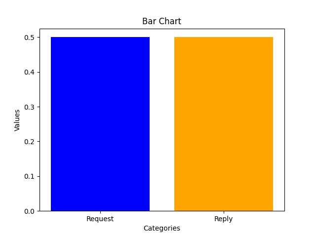

Nombre de flags [S] (SYN) = 2046
Nombre de flag [.] (ACK) = 6961

Nombre de requêtes et réponses
Request = 42Reply = 42

Statistiques entre seq, win et ack
Nombre de seq = 8201Nombre de win = 10766
Nombre de ack = 8768
Sur cette page web, nous vous présentons les informations et données pertinentes trouvées dans le fichier à traiter.